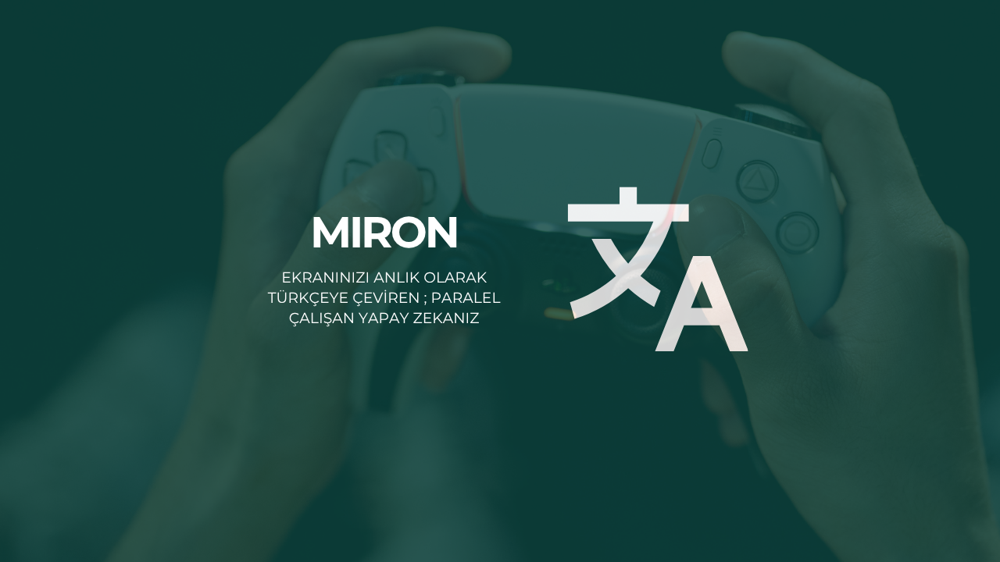

Apple Vision & Ollama
macOS OCR işlemi için Apple Vision Framework, güçlü yerel çeviri işlemleri için de Ollama altyapısı kullanıldı. Tamamen yerel, donanım hızlandırmalı bir çözüm.
macOS OCR işlemi için Apple Vision Framework, güçlü yerel çeviri işlemleri için de Ollama altyapısı kullanıldı. Tamamen yerel, donanım hızlandırmalı bir çözüm.
Oyun veya kamera hareketlerini bekletmeden OCR kutularının 25 FPS (40ms) hızında akmasını sağlayan Optical Flow donanım hızlandırma tabanlı kaydırma takibi.
Çeviri kutularında tıkla-geç (click-through) desteği. Böylece oyun veya aktif uygulama kullanımını kısıtlamaz, arkaplanı şeffaf bırakır.

Miron, tamamen yerleşik teknolojiler üzerine inşa edilmiş bir ekran okuma ve çeviri uygulamasıdır. Apple Vision framework ile anlık metin sınır kutularını (bounding boxes) okuyarak metni çıkartır ve Ollama üzerinden sağlanan (ör: translategemma) yerel yapay zeka modelleriyle çeviri işlemini tamamlar.
F tuşuna basarak tam ekran yapabilirsiniz.Uygulama, Quartz ve Apple Vision Framework kullandığı için sadece macOS üzerinde çalışır. Bilgisayarınızda Python 3.9+ ve Ollama (çalışır durumda) kurulu olmalıdır.
Ollama Modeli İndirme: Terminali açıp uygulamanın çeviri için kullandığı modeli indirin:
ollama run translategemma
Bağımlılıkları Yükleme: Projeyi bilgisayarınıza klonladıktan sonra, bir sanal ortam oluşturun ve gereksinimleri yükleyin:
python3 -m venv .venv
source .venv/bin/activate
pip install -r requirements.txt
Ekran Kaydı İzni: Uygulamanın ekranı okuyabilmesi için Sistem Ayarları > Gizlilik ve Güvenlik > Ekran Kaydı bölümünden Terminal'e (veya IDE'nize) izin vermeniz gerekmektedir.
Projeyi Başlatma: Sağlanan shell betiğini çalıştırabilirsiniz:
./run.sh
Uygulamanın çalışma mantığını miron/config.py üzerinden özelleştirebilirsiniz:
translategemma).2000).